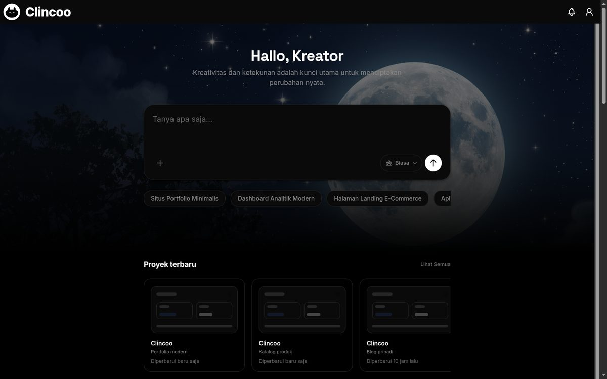
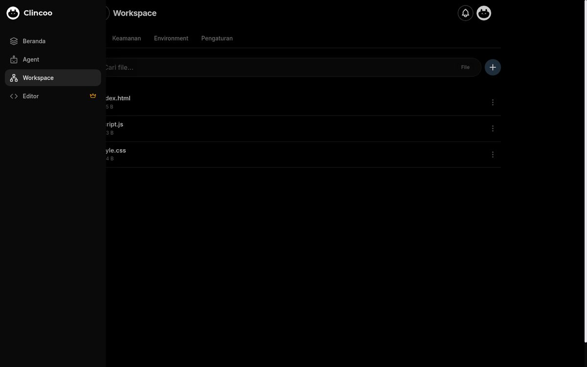
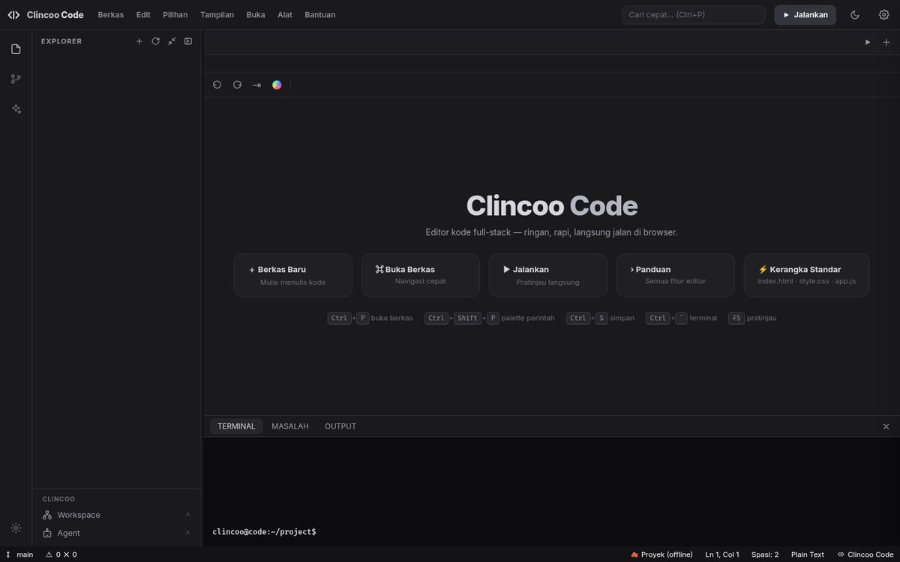
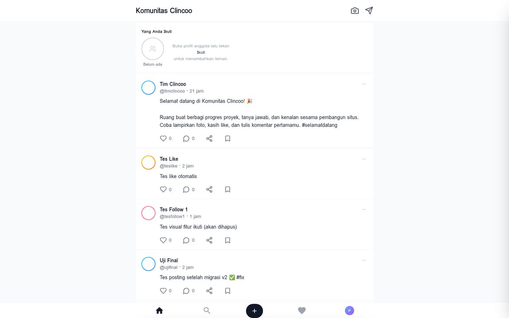

Clincoo adalah tempat mempublikasikan website. Unggah proyekmu, dapatkan link, dan website-mu online untuk semua orang. Kalau butuh bantuan, asisten AI siap membantu.
Tanpa kartu kredit. Paket Starter gratis selamanya.
tokokopi.pages.dev · 1 menit
Siap untuk dipublikasikan
Buat landing page toko kopi dengan warna coklat hangat
Kamu · baru saja
Tampilan asli aplikasi dan editor — langsung dari Clincoo, bukan ilustrasi.




Beranda — semua proyekmu dalam satu workspace
0+
Website dibangun & dipublikasikan
0 menit
Rata-rata sampai website online
0 langkah
Dari prompt sampai online
0 coding
Yang perlu kamu kuasai
Fokus kami
Unggah, atur domain, publikasikan — dan asisten AI membantu kalau kamu butuh. Simpel, cepat, tanpa ribet.
Simpel banget
Editor Kode Clincoo
Sebelum dipublikasikan, sempurnakan dulu di editor. Clincoo punya file manager, live preview, dan asisten AI yang siap membantu — kalau kamu mau.
<section class="hero">
<h1>Kopi Senja — Rasa Hangat</h1>
<p>Biji arabika pilihan, disangrar
dengan cinta setiap pagi.</p>
<button>Pesan Sekarang</button>
</section>Desainer AI
Saya usul tipografi besar dan tata letak yang bersih untuk halaman utama.
Programmer AI
Struktur halaman siap. Tinggal gabungkan dan website siap dipublikasikan.
Tim AI sedang menggabungkan hasil kerjanya…
Fitur bantuan
AI di Clincoo bukan penggantimu — cuma pembantu. Di mode Kolaborasi, beberapa agen AI berdiskusi menyiapkan halaman atau memperbaiki kode, lalu kamu yang memutuskan dan mempublikasikan.
Publikasikan
Ini inti Clincoo. Unggah proyekmu, klik publikasikan, dan website-mu langsung online lengkap dengan HTTPS — atau pasang domain sendiri. Tanpa ribet.
Status Publikasi
ONLINE$ publikasikan
→ Mengunggah 24 berkas…
→ Menyiapkan HTTPS…
✓ Online — tokokopi.pages.dev
tokokopi.com
TerhubungKata pengguna
Harga transparan
Tanpa biaya tersembunyi. Batalkan kapan saja.
Semua harga dalam Rupiah. Pembayaran mudah via ClincooPay, QRIS, atau transfer.
Masih ragu?
Gabung gratis hari ini. Unggah proyek pertamamu dan link-nya bisa kamu bagikan besok.
Mulai Gratis SekarangStarter gratis selamanya — tanpa kartu kredit